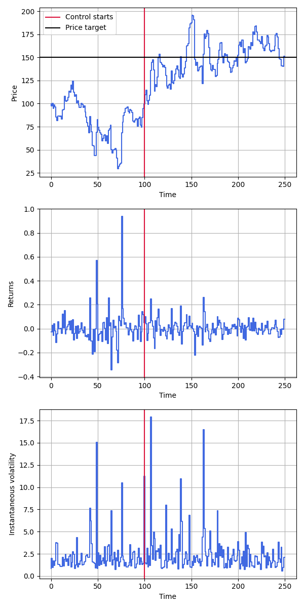
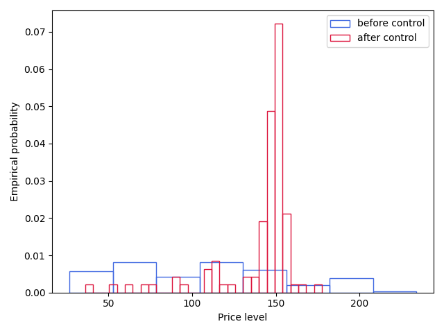

For no apparent reason at all, one day we might wake up and decide that we want to control the overall volatility of a market for a particular asset. If we need a reason, it’s because we are long a volatility instrument and want to make money – that makes sense. This task sounds difficult, and it sounds particularly hard if we want to do it algorithmically. Thankfully, we remember that the volatility of an asset is often deffined via reference to its options price. Ceteris paribus, the higher the volatility of an asset, the higher the price of an option on the asset. The actual functional relationship between the two is called the implied volatility; the volatility of the asset that is implied by the relationship between the asset’s price and the price of an option on the asset.
So, without too much loss of generality (“w2mlog” from now on), let’s consider an evolving options price:
\[ dV = \mu(V)\ dt + s(V)\ dW_t,\ V(0) = V_0. \] If you cared (and you do), you could estimate \(\mu\) and \(s\) from historical options data in the usual way. It would be wrong and the fit wouldn’t be great because you would be using a normal model, but you could do it, and you can bet that other people will, too. Alternatively, you could use your favorite relevant analytical asset price model, e.g. Black-Scholes, Black 76, etc., and apply Ito’s lemma to recover the option price evolution equation.
Anyway, we want to control the options price – for the sake of argument, let’s say we want to set it to be an arbitrary price level \(y(t)\) where we will assume that \(y(t) \gg V_0\). We reach back to our market microstructure upbringing and recall that, for a wide variety of asset types including options, the square-root “law” of price impact holds. This says that the change in price an asset \(|\Delta X|\) is proportionate to the square root of the relative size of a meta-order, scaled by the volatility of the asset: \[ |\Delta X| = \mathrm{vol}(X) \left|\frac{n}{N} \right|^{1/2}. \] Supposing we measure everything on the timescale of \(dt\), this means we can define an abstract “action” variable \(a_t = \varepsilon_t |n_t / N|^{1/2}\), where \(\varepsilon_t \in \{-1, 1\}\) indicates the side of the book the order is placed on, and write the controlled form of the options price evolution equation: \[ dV = [\mu(V) + s(V) a_t]\ dt + s(V)\ dW_t,\ V(0) = V_0. \] Let’s first solve a relatively simple problem: finding the optimal control to maximize the probability that we achieve the price path \(y(t)\). In other words, we will solve \(\max_a \log p(V=y|\cdots)\), where we have omitted the dependencies on \(\mu\) and \(s\) explicitly. Discretizing the evolution equation using a first-order scheme, we’re solving \[ \max_a \sum_{t=1}^T -\frac{1}{2}\left\{\frac{y_t - [V_{t-1} + \mu(V_{t-1}) + s(V_{t-1})a_t]\delta t}{s(V_{t-1})\delta t^{1/2}} \right\}^2, \] and upon differentiating, setting the result equal to zero, and doing algebra that is supposed to be easy but still takes me too long, results in an optimal action of \[ a_t = \frac{1}{s(V_{t-1})}\left[ \frac{y_t - V_{t-1}}{\delta t} - \mu (V_{t-1}) \right] \rightarrow_{\delta t \rightarrow 0^+} \frac{1}{s(V)}\left[\frac{dV}{dt}\Bigg|_{V(t) = y(t)} - \mu(V) \right]. \] In words, this is saying that the optimal strategy is to add/subtract from the mean trajectory of the options price as required to meet the specified target while controlling for the fact that it will be much harder to do this when the options vol is low. Makes sense.
A more realistic problem accounts for the fact that we don’t have infinite money. (Oh well.) The cost of executing the above strategy is the appropriately signed number of contracts that are bought (positive cost) or sold (negative cost) multiplied by the execution price integrated over time: \[ \mathrm{Cost} = \int_0^T dt\ V(t)\ \varepsilon(t)\ n(t) = N\int_0^Tdt\ V(t)\ a(t)^2 \approx N\sum_{t=1}^T V_{t-1}a_t^2 \delta t, \] where I elided the side of the order and we used \(V_{t-1}\) as a stand-in for the actual execution price of the executed orders, which will actually be some convex combination of \(V_{t-1}\) and \(V_t\). (You could change this in the resulting derivation, e.g. setting the execution price to \(\frac{V_t - V_{t-1}}{2}\), and the analysis wouldn’t change too much. In application we have to also be cognizant that our orders could execute outside the spread, and indeed in an increased volatility regime, which these orders would be actively creating, execution outside the spread is more likely to happen.) Now we’re solving the constrained problem \[ \max_a \log p(V=y|\cdots)\ \mathrm{subject \ to}\ N\sum_{t=1}^T V_{t-1} a_t^2 \leq C_{\max}. \] Introducing a Lagrange multiplier, differentiating, setting equal to zero, and solving again, we have now \[ a_t = \frac{1}{s(V_{t-1})}\frac{1}{1 + \lambda N V_{t-1}}\left[ \frac{y_t - V_{t-1}}{\delta t} - \mu (V_{t-1}) \right]. \]
This expression is important because it’s pretty easy to implement and allows us to modulate the implementation for how much we’re willing to spend to try to set the options price.
The proof is in the pudding. Before we try the control function we developed in real markets (which we might do as part of a quant strategy in a relatively liquid asset purely for the purposes of profit-making, obviously) we would like to try it in simulation. It’s probably most instructive to assess if this strategy works in a relatively realistic simulation that includes market microstructure, not just in the context of a theoretical model ala Black-Scholes. To accomplish this, I used a market microstructure framework I implemented an embarrassingly long time ago (now seven years ago – I wrote the first draft of the framework on my honeymoon…my blushing bride was unimpressed by my task prioritization, to say the least). The core simulation code is open sourced, but the agent that implements the strategy derived above isn’t. (I can send the price control agent source code to select parties on request.) There are a variety of other “background” agent strategies implemented, including noise traders, momentum and mean-reversion traders, basic market makers (ala inventory minimization strategies), and quant strategies that learn from past performance (implemented as neural networks that update using evolutionary computation methods). Importantly, this simulation codebase was written as a testbed for market microstructure research, so there’s no mechanism for discovery of fundamental value (and, concomitantly, more work needs to be done on incorporating perception of fundamental value into quantitative volatility and price control strategies).

An example of the implemented strategy in a market consisting of noise traders and market makers is displayed in Figure 1. The control strategy turned on 2/5 of the way through a market period (analogous to a day) and was set to increase the price of an asset to a specified level. It performed as expected, raising the price of the asset and maintaining it stochastically around the desired level. The results of running multiple (\(n=100\)) trials, displayed in Figure 2, demonstrates substantial evidence that the success of the control demonstrated in Figure 1 is not a result of random chance.

The average price trajectory before the application of control differs substantially from the average value of the price trajectory after the application of control. No, I didn’t test it for statistical significance because have you looked at the figure, but if you want to there a ton of ways to do it; the most straightforward is to measure the Jensen-Shannon divergence between the distributions.
What’s next?